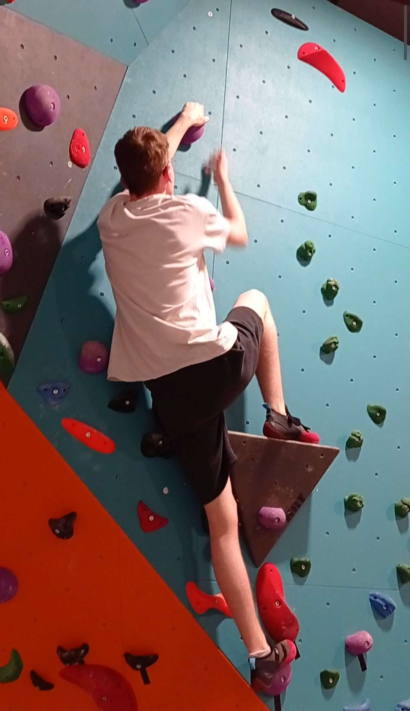

My hobbies
Music


I have always loved playing music but during my high school years I started to "squat" the music room and it was there that I met a lot of people who were passionate about music, that's where I met a lot of people who were passionate about music. moment that my approach to music changed, I found people with whom I shared music and could create things together, that's why I often get together with my musician friends to create and share good times
Climbing
In college I was quite afraid of climbing, I had difficulty reaching the top of the wall for fear that something would happen. To overcome this fear I recently started climbing again, but this time trying to overcome my fears and always do better, there is still a way to go but I can see the improvement compared to when I was in college